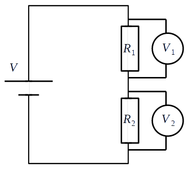
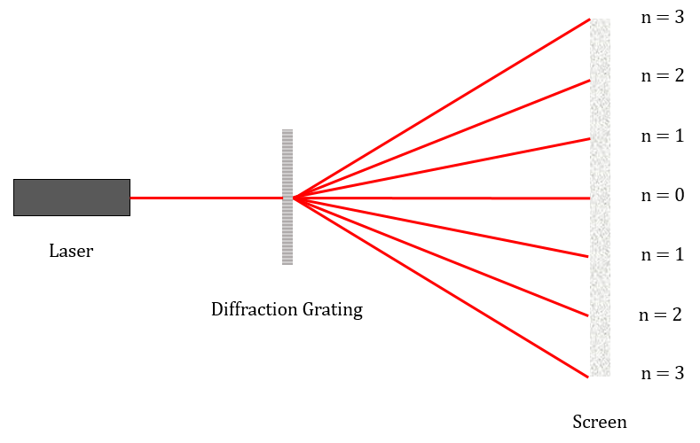

Digging up the Past
Back To OverviewResistivity (\(\rho\)) is a property of a material that describes the extent to which it opposes the flow of current.
\(\rho =\frac{RA}{l}\)
Where \(R\) is resistance, \(A\) is the cross sectional area and \(l\) is the length of the wire.
CORE PRACTICAL 2: Determine the electrical resistivity of a material.
Diagram:
Method:
- Set up equipment as shown in the diagram.
Analysis:
\(I=nqvA\)
Where \(n\) is the number density of charge carriers, \(q\) is the charge of each charge carrier, \(v\) is the mean drift velocity of the charge carriers and \(A\) is the cross sectional area of the wire.
Referring to the above equation, as \(n\) increases, so does the current. As current increases, resistance decreases, since \(R=\frac{V}{I}\). Furthermore, as resistance decreases, so does resistivity (see equation for resistivity above).
\(n\) varies a lot between different materials, and so there is a big variation in the resistivities of different materials.
The potential along a uniform current-carrying wire increases uniformly with the distance along it.
A potential divider circuit is a circuit with a voltage source and several resistors in series, and is used to get a fraction of a source voltage.
As the resistance of a component increases, so does the potential difference dropped across it (since \(V=IR\)).

\(V_{1}=\frac{R_{1}}{R_{1}+R_{2}}V\)
\(V_{2}=\frac{R_{2}}{R_{1}+R_{2}}V\)
A light dependent resistor (LDR) has a higher resistance when it is darker, and a lower resistance when it is brighter.
An NTC (negative temperature coefficient) thermistor has a higher resistance at lower temperatures, and a lower resistance at higher temperatures.
An LDR or a thermistor can be used in a potential divider to give an output voltage that depends on brightness or temperature.
Diffraction is the spreading out of a wave as it passes through a gap or past an object.
Maximum diffraction occurs when the size of the gap is approximately equal to the wavelength of the wave.
A diffraction grating is a slide containing many equally spaced slits very close together. When light passes through a diffraction grating, it forms a diffraction pattern.
\(n\lambda =d\sin\theta\)
Where \(n\) is the order of the maximum, \(\lambda\) is the wavelength, \(d\) is the distance between the slits and \(\theta\) is the angle to the normal made by the maximum.

CORE PRACTICAL 8: Determine the wavelength of light from a laser or other light source using a diffraction grating.
Diagram:
Method:
- Set up equipment as shown in the diagram.
Analysis:
The de Broglie hypothesis states that all matter exhibits wave-like behaviour. The wavelength (\(\lambda\)) of any particle can be found using the following formula:
\(\lambda =\frac{h}{p}\), or \(\lambda =\frac{h}{mv}\)
Where \(p\) is momentum, \(m\) is mass, \(v\) is velocity and \(h\) is Planck's constant.